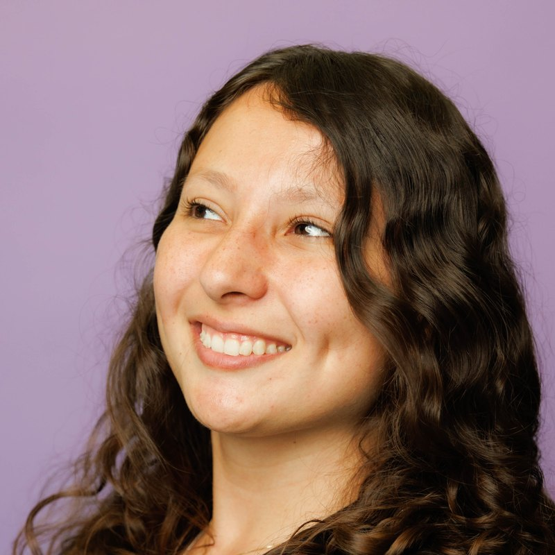

I am an R&D engineer on the Computational Imaging platform at the Chan Zuckerberg Biohub in San Francisco. I build tools that let microscopes follow living samples on their own, and data pipelines that turn large time-lapse datasets into something biologists can actually use.
Before the Biohub I did an M.Sc. in Computer Science at the University of Campinas (UNICAMP), advised by Alexandre Xavier Falcão, working on 4D MRI of the thorax to help radiologists spot pleural mesothelioma earlier. Part of that work was done with the PREDICT-Meso network at the University of Glasgow. My undergraduate degree is in Electrical Engineering from the State University of Londrina, where I started out building embedded sensing systems.
I care about imaging methods that hold up on real data, and about open tools that other labs can pick up and run.
Research highlights

DynaTrack: label-agnostic smart tracking for mapping dynamics of organ development
A tracking loop that runs phase reconstruction and virtual staining during acquisition, so the microscope can follow developing zebrafish neuromasts using only gentle bright-field light. It kept 73 of 75 neuromasts in view for up to 70.5 hours; with classical imaging they drifted out of view after about 12 hours.

DynaCell: an evaluation framework for dynamic 3D virtual staining of live cells
A benchmark for virtual staining of live cells over time: paired label-free and fluorescence volumes of A549 cells, four organelles, and three infection conditions, imaged on the Mantis microscope. I curated and registered the dataset.

DynaCLR: contrastive learning of cellular dynamics with temporal regularization
Self-supervised embeddings of how single cells change over time, learned from tracked 3D time-lapses of infected and drug-treated cells. I built the data side: registration, nuclear segmentation from virtual stains, tracking with Ultrack, and curation of the dataset as OME-Zarr.

Meso-Regions: 4D segmentation of early contrast enhancement biomarkers for pleural mesothelioma diagnosis
An open-source pipeline that flags suspicious pleural regions in dynamic contrast-enhanced MRI with no manual ROI drawing: motion correction, pleural extraction, supervoxels across all time points, per-region enhancement curves, and a rule-based detector for early contrast enhancement.

MISe: multidimensional image segmentation software
An interactive tool for segmenting 4D DCE-MRI, built during a research visit to the PREDICT-Meso network in Glasgow and used to produce ground-truth pleural labels for the cohort.
Publications
- T. M. Theodoro, A. Q. Ryan, R. Banks, E. Hirata-Miyasaki, T. Lao, S. Jaisingh, A. Jacobo, S. B. Mehta, I. E. Ivanov. DynaTrack: label-agnostic smart tracking for mapping dynamics of organ development. SPIE High-Throughput Biophotonics XI, 2026.
- A. A. Kalinin, D. Zheng, T. M. Theodoro, I. E. Ivanov, E. Hirata-Miyasaki, S.-C. Lee, Z. Liu, S. Varra, T. Chandler, S. Pradeep, A. Liu, M. Leonetti, A. Arias, B. Huang, S. Mehta. DynaCell: an evaluation framework for dynamic 3D virtual staining of live cells. NeurIPS Datasets and Benchmarks Track, 2026.
- T. M. Theodoro, I. F. Silva, S. Tsim, K. Blyth, A. X. Falcão. Meso-Regions: 4D segmentation of early contrast enhancement biomarkers for pleural mesothelioma diagnosis. IEEE ISBI, 2026.
- E. Hirata-Miyasaki, S. Pradeep, Z. Liu, A. Imran, T. M. Theodoro, I. E. Ivanov, S. Khadka, S.-C. Lee, M. E. Grunberg, H. Woosley, M. Bhave, C. Arias, S. B. Mehta. Embedding cell state dynamics via contrastive learning of representations of 3D dynamic imaging datasets. NeurIPS Workshop for Imageomics, 2025.
- E. Hirata-Miyasaki, S. Pradeep, Z. Liu, A. Imran, T. M. Theodoro, I. Ivanov, S. Khadka, M. Bhave, H. Woosley, C. Arias, S. B. Mehta. Mapping cell state dynamics with AI-enabled live cell imaging. SPIE High-Throughput Biophotonics X, 2025.
- T. M. Theodoro. Towards automatic detection of pleural mesothelioma biomarker in 4D dynamic MR imaging. M.Sc. thesis, University of Campinas, 2025.
- S. Pradeep, A. Imran, Z. Liu, T. M. Theodoro, E. Hirata-Miyasaki, I. Ivanov, M. Bhave, S. Khadka, H. Woosley, C. Arias, S. B. Mehta. Contrastive learning of cell state dynamics in response to perturbations. arXiv:2410.11281, 2024.
- S. G. Armato, S. I. Katz, T. Frauenfelder, G. Jayasekera, A. Catino, K. G. Blyth, T. Theodoro, P. Rousset, K. Nackaerts, I. Opitz. Imaging in pleural mesothelioma: a review of the 16th International Conference of the International Mesothelioma Interest Group. Lung Cancer, 2024.
- I. Borlido, F. Belém, L. Melo, T. M. Theodoro, I. F. Silva, Z. K. G. do Patrocínio Jr, A. X. Falcão, S. J. F. Guimarães. Superpixel segmentation: from theory to applications. SIBGRAPI, 2023.
- I. F. da Silva, T. M. Theodoro. LIDS-UNICAMP: MISe, multidimensional image segmentation software. Software release, 2023.
- T. Theodoro. Improvement of an automation system to water treatment by electrocoagulation process. Annual Congress of Scientific Initiation of UEL, 2019.
- T. Theodoro. Study and development of an automation system to water treatment by electrocoagulation process. Annual Congress of Scientific Initiation of UEL, 2018.